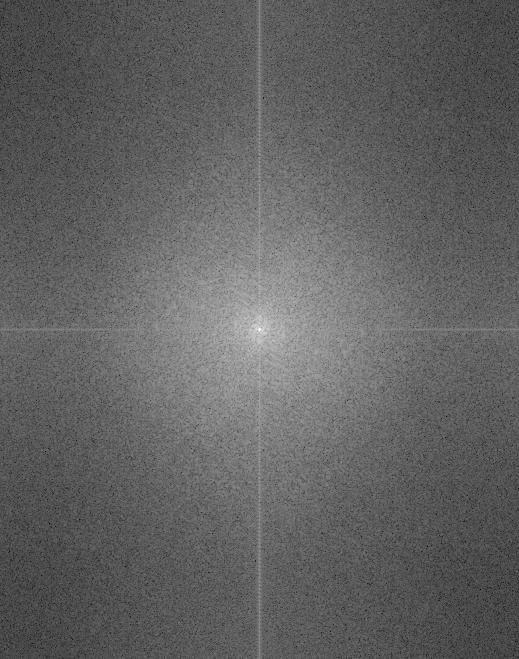

The goal of the project is to apply smoothing filters (such as Gaussiann/low-pass and Laplacian/high-pass filters) and derivate filters (such as D_x, D_y) and play with image's frequencies to produce different kinds of interesting outputs. Specificially, the website will be divided into 2 parts: 1) The first part will mainly talk about the filter and 2) The second part will mainly focus on frequencies.
In this part, we will first go to convolve the image of cameraman with filters in the x and y directions (D_x and D_y) to get the partial derivate in x and y. Then, to compute the gradient magnitude of the image, we can follow the formula introduced in lecture:
and we’ve already got df/dx and df/dy from previous step by convolving the image with D_x and D_y, so we just need to plug the results from the last step to this formula to get the gradient magnitude image. Finally, to turn the gradient magnitude image into an edge image, we binarized each pixel of the image with certain threshold got by taking a few tries. The outputs are shown below:


Since just the difference operator were noisy, we would go to smooth the image with Gaussian filter first before convolving it with derivative filters in this part. The new results are below:

From above, the biggest difference I noticed after applying the Gaussian filter was that the edges of images became much thicker and more apparent than before. This is consistent with my intuition as the Gaussian filter would blur the image and smooth it by removing the noise in some extents, so the edges could be emphasized when we apply derivative filters in this case.
Since the convolution operations are associative, we can first convolve the Gaussian filter with D_x and D_y and then apply DoG filters on the original images. In this case, we can get the same results as above but only need to do one single convolution instead of two. Below are DoG filters as images and the results with DoG filters:


To sharpen an image, we would like to add more high frequencies to the image. As Gaussian filter retains only the low frequencies, we can easily get the high frequencies of the image by subtracting the results from Gaussian filter from the original image. After getting the high frequencies, we simply add it to the original image with the coefficient alpha to get the sharpen image in different extents depends on the alpha chosen.
Once again, due to the associativity of convolution operations, we can combine all these steps into one single convolution and this is the unsharp mask filter mentioned in lecture:
The sharpen version of the sample image and two other images I choose are below (Left: Original, Right: Sharpen with alpha = 2.0):


For evaluation, I also tried to blur a sharp image and then sharpen it again (Order: Original->Blur->Sharpen after blurring):
From above, we can notice that the original image is much sharper than the one sharpened after blurring. This is reasonable and consistent with the intuition. When we apply the Gaussian filter on the original image, lots of details are removed during the process, and these details play an important role on sharpening the image. Thus, when we tried to sharpen it again, the result is much more ambiguous than the original one.
From spec, "Hybrid images are static images that change in interpretation as a function of the view distance". The basic idea of it is combining the high frequency part of one image and the low frequency part of another image to get a hybrid image which leads to different interpretation depends on distance. Since high frequency tends to dominate perception when it's available and low frequency is in opposite (dominate when there is a distance), we will see the high frequency parts when getting close to the image and the low frequency parts when getting far from it.
To implement what described in the last paragraph, we should first align two images with appropriate points (such as the eyes). This can be easily done by using the start code given. Then, we apply Gaussian filter and Laplacian filter (unit-impulse - Gaussian filter)respectively on two images and blend the results to get the hybrid image. To make the results look better, I also did the following 2 steps when applying filters on images and blending them:
Below are inputs and outputs of sample images and other images I choose (Order: Image1->Image2->Image1_aligned->Image2_aligned->Result):


.jpg)


.jpg)


.jpg)

.jpg)

From above, we can see the most of results are good, but the last one, "tiger and car", looks weird. The failure of this group of image is mainly because of the bad alignment. As these two objects (tiger and car) have very distinct outline, it is very hard to find appropriate points to align them. In this case, the hybrid image of them looks much worse than other groups.
For other three pairs of images I choose, I like "leopard and lion" the most, so I illustrate the process through frequency analysis for it below:



For this part, I am going to implement Gaussian and Laplacian stacks for the multi-resolution blending in next part. Gaussian stack is just the Gaussian pyramid without downsampling. To get the Laplacian image for each level, we just need to subtract the Gaussian image at that level from the one at the last level (i.e. Laplacian stack level 1 = Gaussian stack level 1 - Gaussian stack level 0). In addition, different from the Gaussian pyramid, I use the same Gaussian filter in an auto-regressive fashion (after asking TA on piazza) instead of double the filter's kernel size each level.
Below are the results got by applying my stack function to Oraple and recreate the outcomes in textbook (Order: from lower to higher level):


This is the final part for this project. In this part, I'm going to blend a couple of images by "pyramid" blending with the help from the stack function I build in part 2.3. I use "pyramid" instead of pyramid since I actually use stack here. As described in lecture, the general approach looks like this:
The first step can be easily done by using the stack function defined in part 2.3. The third and forth step can also be completed by plugging the corresponding images to the formula, and the only thing needed to be noticed here is that we should collapse LS starting from the last images in Gaussian stacks of two input images (I forgot this on my first attempt and this affected a lot). However, for the second step, we need to first construct a binary mask having pixels with value = 0 or 1 depends on how we would like to blend the images. For the oraple, it is naive and we just need to use a mask having a vertical seam in the middle. But for some other images below, we have to build irregular masks. In this case, I construct the masks by iteratively checking the pixel values and seting a threshold depends on input image + some hardcode. For example, if one input image's backgroud-color is all white (i.e. having the pixel values of 1) and the region we would like to blend is the only part which is not white (i.e. having pixel values samller than 1), I will then traverse through that image and find all indexes having pixel values smaller than 0.95 and set the corresponding indexes in the mask to 1.
Below are the results from sample images and images I choose (including two inputs + mask/the region selected + blending result) :
(for the iris image, I first add paddings to it to make it the same size as blackhole image)


For Bells & Whistles, I added color to part 2.4 and got the colored blending. To add color to the results, I just split the colored input images at the beginning, and took each of the channels as a single image and blended them respectively using the same techinque when dealing with the gray-scale image above. Then, after completing the blending of all 3 channels, I combined them together at the end to get the colored results. From the results, I felt the adding color definitely enhanced the effect a lot.
Below are the colored results for each blending in part 2.4: